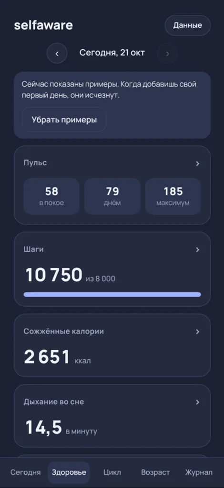
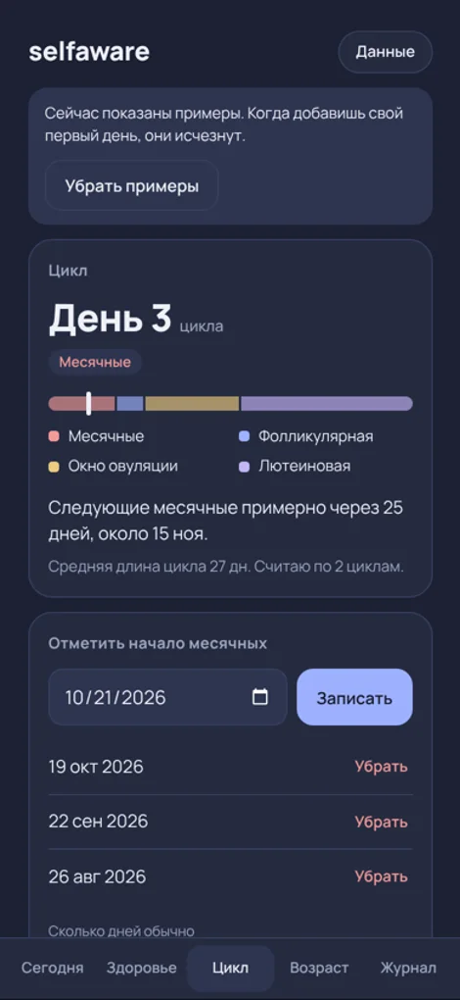
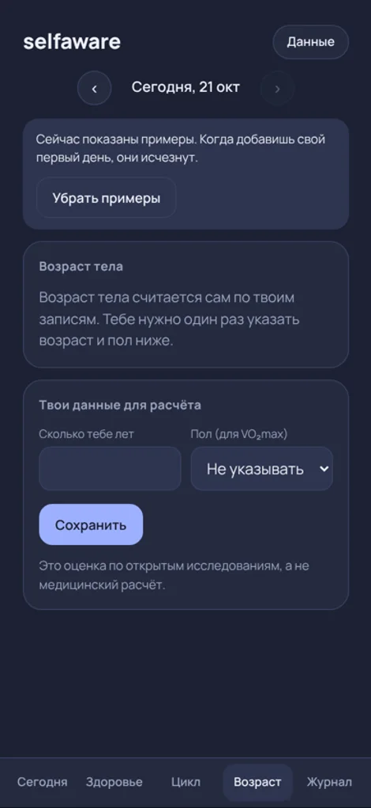
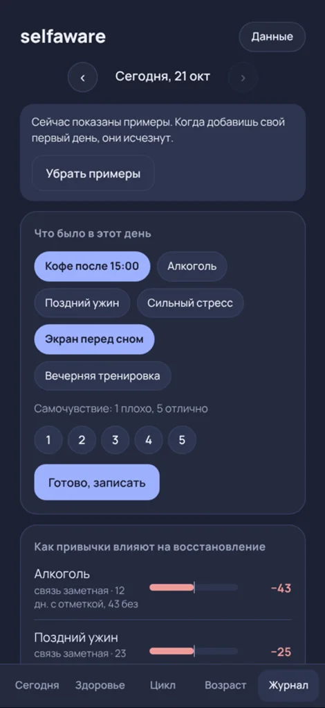

Твоё тело, твои данные, без подпискиYour body, your data, no subscription
selfaware считает восстановление, нагрузку и сон по пульсу с браслета, прямо на твоём iPhone.selfaware turns heart-rate data from your band into recovery, strain and sleep insights, right on your iPhone.
Пока только для iPhone. Приложение не опубликовано и его нет в App Store, им пользуюсь только я. Это не медицинское устройство.For iPhone only for now. The app is not published and is not on the App Store; only I use it. It is not a medical device.

Чем он отличаетсяWhat makes it different
Восстановление по твоей нормеRecovery against your own baseline
Показатели сравниваются с твоими предыдущими днями, а не со средним по людям.Numbers are compared with your own previous days, not a population average.
Объяснение вместо цифрыExplanations, not just numbers
Видно, какие показатели повлияли на оценку и почему.You see which factors moved your score and why.
Журнал привычекHabit journal
Кофе, ужин, алкоголь: показывает, что на тебя действительно влияет.Coffee, dinner, alcohol: it shows what actually moves your numbers.
Данные только на телефонеYour data stays on your phone
Без аккаунта и облака.No account, no cloud.
Как это выглядитWhat it looks like
Это веб-версия на примерах данных: так выглядят экраны, которые встраиваются в iPhone-приложение. Скриншоты самого приложения появятся после встраивания.This is the web version with sample data: the screens that are being built into the iPhone app. Screenshots of the app itself will appear once that is done.




Что работает, а что ещё нетWhat works and what doesn’t yet
Ниже только то, что проверено на реальных данных автора, и открытый список того, что ещё не сделано.Below is only what has been checked on the author’s real data, plus an open list of what is not done yet.
Уже работаетWorks already
- Живой пульс с браслетаLive heart rate from the bandПодключение по Bluetooth через стандартную службу пульса, пульс в реальном времени.Connects over Bluetooth through the standard heart-rate service, real-time pulse.
- Запись в фонеBackground recordingПроверено на заблокированном телефоне: за 70 минут записано 4200 точек, по одной в секунду, без пропусков.Checked on a locked phone: 4,200 points in 70 minutes, one per second, no gaps.
- Интервалы между ударами и HRVBeat intervals and HRVПервая оценка по дневной дрёме около 20 мс, правдоподобно.First estimate from a daytime nap is about 20 ms, which looks plausible.
- Восстановление, проверенное на историиRecovery, tested on historyНа 236 днях данных автора на днях, которых формула не видела, средняя ошибка 6 пунктов из 100. Это данные одного человека, у других результат может отличаться.On 236 days of the author’s data, on days the formula had not seen, the average error was 6 points out of 100. This is one person’s data, so results may differ for others.
- Экраны в веб-версииScreens in the web versionСегодня, Здоровье, Цикл, Возраст тела, Журнал привычек и настраиваемый главный экран.Today, Health, Cycle, Body age, Habit journal and a customisable home screen.
- ХранениеStorageЗапись пульса лежит в файле на телефоне, без облака.The heart-rate record is a file on the phone, no cloud.
Ещё в разработкеStill in development
- Встроенные экраны в iPhone-приложенииBuilt-in screens in the iPhone appКод написан, но на телефоне ещё не запускался.The code is written but has not run on the phone yet.
- Полная ночь записиA full night of recordingПервая целая ночь запланирована на 21–22 октября. Точность сна и HRV за ночь ещё не сверялась с эталоном.The first full night is planned for 21–22 October. Night sleep and HRV accuracy are not yet checked against a reference.
- Стадии снаSleep stagesСчитаются по пульсу и очень приблизительны, без проверки на реальном устройстве.Estimated from heart rate only and very approximate, not verified on a real device.
- НагрузкаStrainФормула пока завышает нагрузку в лёгкие дни, нужна настройка на реальных данных.The formula overestimates strain on easy days and needs tuning on real data.
- Дыхание, шаги, температура кожи, SpO₂Breathing, steps, skin temperature, SpO₂Стандартный канал пульса их не передаёт. Нужен закрытый канал браслета: отдельная работа, не гарантированная.The standard heart-rate channel does not carry them. It would need the band’s private channel: separate work, not guaranteed.
- Работа в фоне на длительный срок и App StoreLong-term background use and the App StoreСейчас приложение ставится через Xcode с бесплатным Apple ID, и iOS отключает его через 7 дней. Для App Store нужен платный аккаунт разработчика и проверка Apple.The app is installed through Xcode with a free Apple ID and iOS switches it off after 7 days. The App Store needs a paid developer account and Apple review.
Как он считаетHow it calculates
Браслет на рукеThe band on your wrist
Он служит датчиком пульса. В его настройках включён режим трансляции пульса.It acts as a heart-rate sensor, with heart-rate broadcast switched on in its settings.
Запись на телефонеRecording on the phone
Приложение получает пульс и интервалы между ударами и пишет их в файл, даже когда экран заблокирован.The app receives heart rate and beat intervals and writes them to a file even with the screen locked.
РасчётCalculation
Из пульса считаются сон, пульс в покое и нагрузка по зонам, из интервалов между ударами HRV. Восстановление сравнивается с твоей нормой за последние дни.Sleep, resting heart rate and zone-based strain come from the pulse, HRV from beat intervals. Recovery is compared with your own recent baseline.
ЭкраныScreens
Показывают результат и объясняют, какие факторы повлияли на оценку.They show the result and explain which factors shaped the score.
Методы взяты из открытой спортивной науки: HRV через RMSSD относительно личной нормы, нагрузка по зонам пульса, сон по пульсу и движению.The methods come from open sports science: HRV via RMSSD against a personal baseline, zone-based strain, sleep from heart rate and movement.
Что важно знатьWhat is important to know
Не медицинаNot medical
selfaware не является медицинским устройством, не ставит диагнозы и не заменяет врача. Показатели приблизительные.selfaware is not a medical device, does not diagnose and does not replace a doctor. The figures are approximate.
Не связано с производителем браслетаNot affiliated with the band maker
Браслет упоминается только как источник пульса по стандарту Bluetooth. WHOOP — товарный знак WHOOP, Inc.; selfaware с ней не связан.The band is mentioned only as a Bluetooth heart-rate source. WHOOP is a trademark of WHOOP, Inc.; selfaware is not affiliated with it.
Источники идейSources of ideas
Часть идей расчётов перенесена из открытого проекта NOOP (лицензия MIT). Спасибо его авторам.Some calculation ideas come from the open project NOOP (MIT licence). Thanks to its authors.